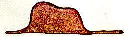

The Tomato Way
Tomatoes love massive comprehensible input. Featuring Le Petit Prince.

Tomatoes love massive comprehensible input. Featuring Le Petit Prince.
Bold - original text
Normal - English translation (as literal as possible)
Italic - Literal translation (or grammar explanation)
Don't try to memorize every word, the goal here is to get as much comprehensible input as possible in a short time. Try to understand each sentence and move on.
Lorsque j'avais six ans j'ai vu, une fois
When I was 6 (had 6 years) I've seen, once (one time)
une magnifique image
a magnificent picture
dans un livre sur la Forêt Vierge qui s'appelait "Histoires Vécues"
in a book about (on) the primeval (virgin) forest which is called (called herself) "True stories" (Stories Lived)
Ça représentait un serpent boa qui avalait un fauve
It represented a boa constrictor who was swallowing a tiger
Voilà la copie du dessin
Here's a copy of the drawing
Now here's the entire paragraph! If you forget the meaning of a word or a sentence, just scroll back.
Lorsque j'avais six ans j'ai vu, une fois, une magnifique image, dans un livre sur la Forêt Vierge qui s'appelait "Histoires Vécues". Ça représentait un serpent boa qui avalait un fauve. Voilà la copie du dessin.

On disait dans le livre
In the book it said (we said in the book)
Les serpents boas avalent leur proie tout entière, sans la mâcher
The boa constrictors swallow their prey whole (all entire), without chewing it (without it chewing)
Ensuite ils ne peuvent plus bouger
Then they can no longer move
et ils dorment pendant les six mois de leur digestion
and they sleep through (during) the 6 months of their digestion
J'ai alors beaucoup réfléchi sur les aventures de la jungle
I've pondered deeply, then, over (I have then much thought on) the adventures of the jungle
et, à mon tour, j'ai réussi, avec un crayon de couleur, à tracer mon premier dessin
and, (at my turn) I've succeeded, with a colored pencil, in making my first drawing
Mon dessin numéro 1. Il était comme ça
My first drawing. It was like this
On disait dans le livre: "Les serpents boas avalent leur proie tout entière, sans la mâcher. Ensuite ils ne peuvent plus bouger et ils dorment pendant les six mois de leur digestion".
J'ai alors beaucoup réfléchi sur les aventures de la jungle et, à mon tour, j'ai réussi, avec un crayon de couleur, à tracer mon premier dessin. Mon dessin numéro 1. Il était comme ça:

J'ai montré mon chef d'oeuvre aux grandes personnes
I've showed my masterpiece to the grown-ups (big people)
Elles m'ont répondu : "Pourquoi un chapeau ferait-il peur ?"
They answered (they have me responded) : Why would anyone be frightened by a hat? (why would a hat make fear)
Mon dessin ne représentait pas un chapeau
My drawing didn't represent a hat
Il représentait un serpent boa qui digérait un éléphant
It represented a boa constrictor who was digesting an elephant
J'ai alors dessiné l'intérieur du serpent boa
I then drawed the inside of the boa constrictor
afin que les grandes personnes puissent comprendre
so that the grown-ups can (subjunctive of "pouvoir", used due to "afin que") understand
Elles ont toujours besoin d'explications
They still need the explanations (they have still need of explanations)
Mon dessin numéro 2 était comme ça
My second drawing was like this
J'ai montré mon chef d'oeuvre aux grandes personnes et je leur ai demandé si mon dessin leur faisait peur.
Elles m'ont répondu : "Pourquoi un chapeau ferait-il peur ?"
Mon dessin ne représentait pas un chapeau. Il représentait un serpent boa qui digérait un éléphant. J'ai alors dessiné l'intérieur du serpent boa, afin que les grandes personnes puissent comprendre. Elles ont toujours besoin d'explications. Mon dessin numéro 2 était comme ça: